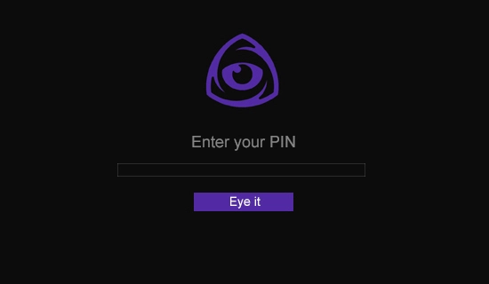

The first and the best FiveM Screenshare tool. Detecting cheats in the most efficient way that you ever seen.
See Scan Template Eye It
We have the biggest quantity of detections as possible, mainly detecting the most famous and paid cheats.
Our tool do not have "false positives", in other words, if we say a player is cheating, he is certainly cheating.
We have 24/7 support for english and portuguese, make sure to join our discord.
We are very rigorous at privacy, our tool only check some windows processes and the game memory, none personal informations are collected.
A scan can take from ~10 to ~40 seconds depending how fast is your computer.
Our tool is updated every time a new cheat is released or get a new update, you can check the latest update at changelogs.
We accept the following methods: Paypal, Picpay, Mercado Pago and PIX.
We can offer you the best FiveM anti-cheat ever created, determining for sure in seconds if a player is or not cheating.
We don't make many exceptions about this, but if you have a youtube channel or own a big server you can open a ticket and talk with us.
A Generic Cheat means that a string can be more than one cheat, so it flags like a generic cheat.